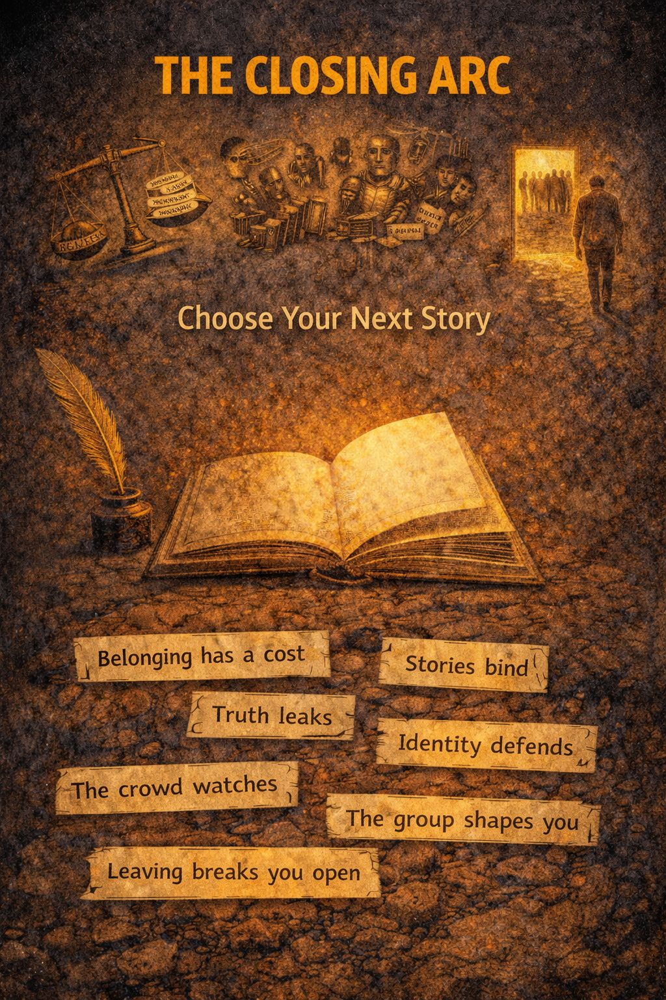

The seven channels form a journey:
Belonging has a cost
Stories bind
Truth leaks
Identity defends
The crowd watches
The group shapes you
Leaving breaks you open
You get to choose your next story on purpose.
The Shadow Channels are not enemies.
They are maps of what happens beneath identity: beneath loyalty, beneath performance, beneath fear, beneath belonging.
Once you can see the channels, you stop drowning inside them.
You begin noticing:
Awareness changes the relationship.
You stop moving automatically.
You stop defending every inherited role.
You stop confusing survival patterns with destiny.
Maybe you return to your old communities with more honesty.
Maybe you build quieter friendships.
Maybe you speak differently.
Maybe you stop performing.
Maybe you finally let yourself outgrow something you already left emotionally years ago.
The goal is not isolation.
The goal is conscious belonging.
A life where:
What kind of story lets me become more human, not less?